Data Science for Electron Microscopy
Week 12: Inverse problems I: regularisation, tomography & sensor fusion
FAU Erlangen-Nürnberg
Institute of Micro- and Nanostructure Research


Recap: Week 11 and today’s question
- Week 11: uncertainty, Gaussian processes and autonomous EM — ensembles and MC dropout quantify how sure a model is, conformal prediction certifies it, and Bayesian optimisation lets the microscope decide where to measure next.
- The Bayesian language from Week 11: prior × likelihood → posterior. Today this language returns with a new job — not to predict a label, but to reconstruct an object.
- Today’s question: given the measurements \(\mathbf{y}\) (a blurred HAADF image, a tilt series, a noisy EDS map), how do we recover the physical object \(\mathbf{x}\)? Why is this hard, and how do priors make it possible?
- Today’s answer: the imaging inverse problem — forward model \(\mathbf{y} = H\mathbf{x} + \boldsymbol\epsilon\), ill-posedness (non-uniqueness, noise amplification), regularisation (Tikhonov / TV / plug-and-play) as “prior knowledge that tames noise” — applied to electron tomography and HAADF + EDS sensor fusion.
Learning outcomes
After this lecture you can …
- write an EM measurement as a forward model \(\mathbf{y} = H\mathbf{x} + \boldsymbol\epsilon\) and name \(H\), \(\mathbf{x}\) and the noise model for HAADF, EDS/EELS, tomography and ptychography;
- explain ill-posedness with Hadamard’s three conditions and the condition number / SVD picture;
- set up a regularised objective, explain Tikhonov vs TV as Gaussian vs Laplace-type priors, and choose \(\lambda\) (L-curve, discrepancy principle);
- describe the Radon transform, the sinogram and the Fourier-slice theorem, and explain the missing wedge;
- compare FBP, SART and TV-regularised tomography and predict their artefacts;
- write down the HAADF + EDS fusion objective term by term and explain why it reduces dose;
- state what no regulariser can recover (the null space of \(H\)).
Road map and self-study
- Road map: computational imaging and the forward model (6) · why inversion is hard: non-uniqueness, Hadamard, ill-conditioning (6) · regularisation: Tikhonov, TV, ADMM, plug-and-play (8) · choosing \(\lambda\) (4) · electron tomography: Radon, sinogram, back-projection, Fourier-slice theorem, missing wedge, FBP vs SART vs TV (12) · sensor fusion: HAADF + EDS as one inverse problem (8) · limits, summary, next week (6).
- Self-study:
notebooks/week12_inverse_deblurring.ipynb— 1-D deblurring (naive inverse vs Tikhonov, \(\lambda\) sweep, L-curve), Tikhonov vs TV via ADMM on a grain-boundary step signal, and a 2-D tomography lab withskimage.transform.radon: FBP vs SART vs SART + TV under a ±60° missing wedge.
Computational imaging: the three-component view
- Classical microscopy: build the best possible optics → the image is the result. The physics is in the hardware; computation is a post-hoc display tool.
- Computational imaging: optics + sensor + computation are co-designed. The detector measures something that is not directly interpretable; a reconstruction algorithm turns the data into the image. Kamilov, Ulugbek S. et al., (2023), doi:10.1109/MSP.2022.3199595
- Three components every EM experiment has:
- Forward operator \(H\): the physics that maps object \(\mathbf{x}\) to measurement \(\mathbf{y}\) (point-spread function, projection geometry, electron scattering).
- Noise model \(\boldsymbol\epsilon\): Poisson shot noise at low dose; Gaussian readout noise at high dose (Week 2).
- Reconstruction algorithm: maps \((\mathbf{y}, H, \text{prior})\) back to an estimate \(\hat{\mathbf{x}}\).
- The paradigm shift: a smarter reconstruction on the same raw data can equal or exceed the gain of an expensive hardware upgrade.
The imaging pipeline: from electrons to numbers
- Illumination → scattering → detection: the beam interacts with the specimen; scattered electrons are collected; detector pixels register counts (Week 2’s data-formation chain).
- Point-spread function (PSF): every point in the object produces a blurred spot in the image. The image is a convolution of the object with the PSF.
- In STEM: the probe is the PSF; at each probe position the detector integrates electrons over an angular range (HAADF, BF, ABF). HAADF intensity at \((i,j)\): \(y_{ij} \approx \int \text{PSF}(\mathbf{r} - \mathbf{r}_{ij})\, Z(\mathbf{r})^{1.7}\, d\mathbf{r}\).
- In tomography: each projection \(p_\theta\) is a set of line integrals along rays at tilt angle \(\theta\) — the Radon transform of the object. We will treat this in detail in the tomography section.
EM modalities as forward models: a comparison table
| Modality | \(H\) | Object \(\mathbf{x}\) | Noise \(\boldsymbol\epsilon\) | Typical prior |
|---|---|---|---|---|
| HAADF-STEM | PSF \(\star\) \(Z^{1.7}\) | projected density | Poisson | TV / sparsity |
| EELS / EDS map | PSF \(\star\) (linear) | elemental fraction | Poisson | TV, smoothness |
| Electron tomography | Radon transform | 3-D density | ≈ Gaussian | TV, non-negativity |
| HAADF + EDS fusion | \(\{Z^\gamma\)-sum, identity\(\}\) | all elemental maps | Gaussian + Poisson | TV per element |
| 4D-STEM ptychography | multislice (nonlinear) | complex potential | Poisson | learned (Week 13) |
- Key insight: the same mathematical template applies to every row — only \(H\), the noise model and \(R(\mathbf{x})\) change. Understand the template once, unlock all rows.
- Ptychography is often over-determined: a 64×64 scan with 64×64 diffraction patterns gives ≈ 16.7 M measurements for 4096 unknowns — redundancy makes the inversion stable (Week 13).
The deblurring problem: a concrete EM example
- Setup: a STEM line profile across atomic columns, recorded with a PSF of width \(\sigma_p = 3\) px (≈ 150 pm at 50 pm/px). Well-separated columns stay separated; close columns merge.
- Forward model: \(\mathbf{y} = h \star \mathbf{x} + \boldsymbol\epsilon\), Gaussian PSF \(h\), \(\boldsymbol\epsilon \sim \mathcal{N}(0, \sigma_\epsilon^2)\).
- In matrix form: \(\mathbf{y} = H\mathbf{x} + \boldsymbol\epsilon\) with a Toeplitz \(H\) (each row a shifted PSF). \(N \times N\), but numerically rank-deficient: high-frequency singular values are near zero.
- The information bottleneck: the PSF attenuates spatial frequencies above \(\sim 1/(2\sigma_p)\). What is attenuated below the noise floor is effectively in the null space of \(H\) — no algorithm can recover it from \(\mathbf{y}\).
- Notebook: this exact problem is implemented in
week12_inverse_deblurring.ipynb, sections 1–5.
The forward model: \(\mathbf{y} = H\mathbf{x} + \boldsymbol\epsilon\)
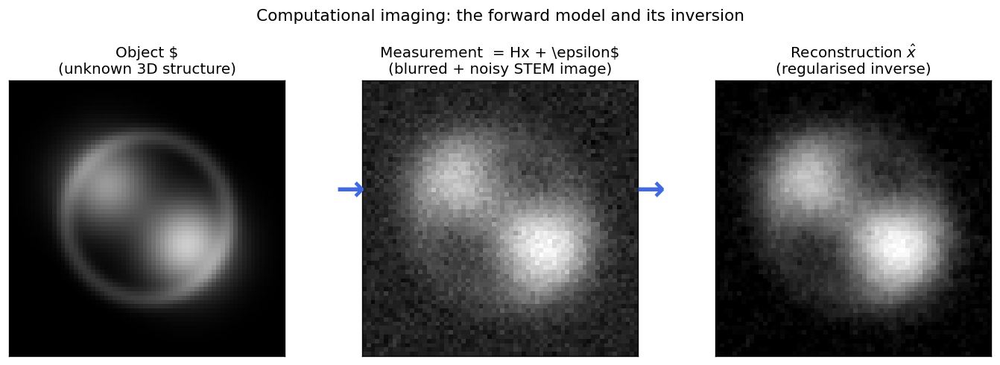
The computational imaging chain: the unknown object \(\mathbf{x}\) (left, a synthetic core-shell nanoparticle) is transformed by the forward operator \(H\) (Gaussian blur, representing the PSF) into the measurement \(\mathbf{y}\) (centre, blurred and noisy STEM image). Regularised inversion recovers an estimate \(\hat{\mathbf{x}}\) (right) that is stable but retains some smoothing bias — an honest consequence of the ill-posed nature of the problem.
Why inversion is hard (I): non-uniqueness
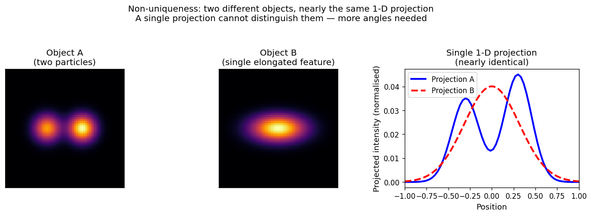
Non-uniqueness in projection imaging: Object A (two separated bright particles, left) and Object B (a single elongated feature, centre) produce nearly identical 1-D projections along the horizontal axis (right panel, blue and red curves are nearly superimposed). A single projection cannot distinguish them — the same measurement \(\mathbf{y}\) is consistent with many objects \(\mathbf{x}\).
Hadamard’s conditions for well-posedness
- A problem is well-posed if three conditions hold simultaneously:
- Existence: a solution exists for any admissible measurement \(\mathbf{y}\).
- Uniqueness: the solution is the only one consistent with \(\mathbf{y}\).
- Stability: small changes in \(\mathbf{y}\) produce small changes in \(\hat{\mathbf{x}}\).
- An inverse problem that violates at least one of these is ill-posed. Hadamard, Jacques, (1902)
- EM examples:
- Existence fails if the true object is not in the model class (e.g. assuming a smooth object when the specimen has sharp defects; noisy data outside the range of \(H\)).
- Uniqueness fails for any projection geometry with limited angular range (the missing wedge).
- Stability fails whenever \(H\) has very small singular values — 1 % noise can become 100 % error.
- Regularisation restores well-posedness by restricting the solution space to physically reasonable objects — smooth, sparse, or piecewise constant.
Why inversion is hard (II): ill-conditioning
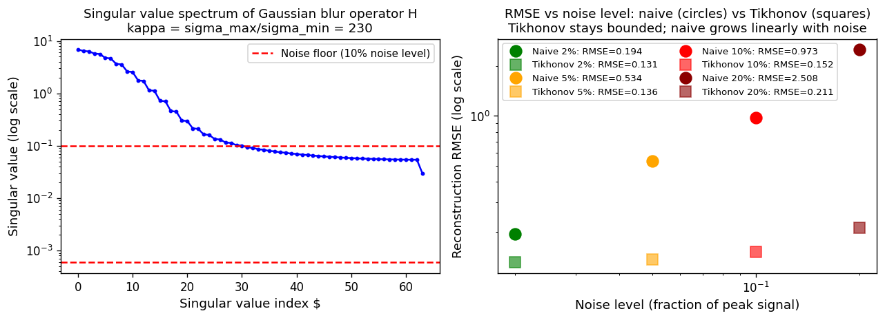
Singular value spectrum of the Gaussian-blur forward operator \(H\) used in this week’s notebook. The condition number \(\kappa = \sigma_\text{max}/\sigma_\text{min} \approx 230\) means a 1-% noise in the measurement can amplify to a 230-% error in the naive inverse. The red dashed line marks the noise floor: singular values below it are dominated by noise. Right panel: reconstruction RMSE vs noise level — circles (naive inverse) grow catastrophically; squares (Tikhonov) stay bounded.
The condition number: measuring ill-conditioning
- Condition number: \(\kappa(H) = \sigma_\text{max} / \sigma_\text{min}\).
- Interpretation: if \(\kappa = 230\), a relative noise of 1 % in \(\mathbf{y}\) can produce a relative error of up to 230 % in \(H^{-1}\mathbf{y}\).
- Rule of thumb: \(\kappa < 10\) — naive inversion is safe. \(\kappa \sim 100\) — some regularisation needed. \(\kappa > 10^4\) — regularisation is essential.
- Why EM operators are ill-conditioned: Gaussian PSFs are low-pass filters — the high-frequency singular values (the OTF at high \(k\)) are tiny. The inverse is a high-pass amplifier that amplifies exactly the frequencies most contaminated by noise.
- The analogy: zooming into a blurry photograph does not restore detail. Regularisation does not “create” missing information; it makes a stable estimate consistent with both data and prior.
Noise amplification in action
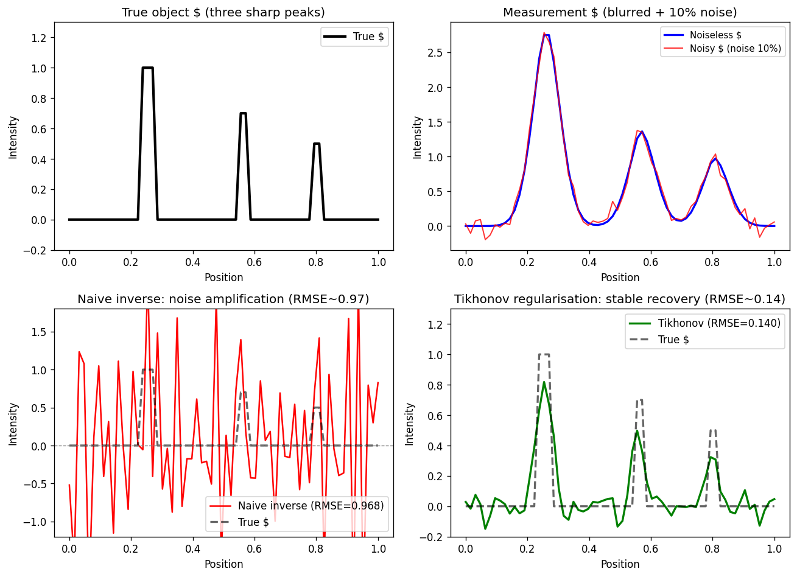
Top-left: the true 1-D object (three sharp peaks). Top-right: the blurred + noisy measurement \(\mathbf{y} = H\mathbf{x} + \boldsymbol\epsilon\) (Gaussian blur, \(\sigma=3\) px, 10 % noise). Bottom-left: naive least-squares inverse — RMSE ≈ 0.968, comparable to the signal amplitude. Bottom-right: Tikhonov-regularised reconstruction (\(\lambda \approx 0.13\)) — RMSE ≈ 0.140, a 7× improvement. The peaks are correctly located but slightly broadened — the honest smoothing bias of regularisation.
Why the naive inverse fails: the SVD picture
- SVD of \(H\): \(H = U \Sigma V^\top\) with \(\Sigma = \text{diag}(\sigma_1 \geq \dots \geq \sigma_N)\).
- Naive inverse: \(\hat{\mathbf{x}}_\text{naive} = V \Sigma^{-1} U^\top \mathbf{y} = \sum_i \frac{\mathbf{u}_i^\top \mathbf{y}}{\sigma_i}\,\mathbf{v}_i\) — divides by every singular value, including the tiny ones.
- Tikhonov filter: \(\hat{\mathbf{x}}_\lambda = \sum_i \dfrac{\sigma_i}{\sigma_i^2 + \lambda}\,(\mathbf{u}_i^\top \mathbf{y})\,\mathbf{v}_i\) — the filter factor \(\sigma_i^2/(\sigma_i^2+\lambda)\) is ≈ 1 for large \(\sigma_i\) and ≈ 0 for \(\sigma_i \ll \sqrt\lambda\).
- Truncated SVD: hard filter (keep \(\sigma_i > \tau\)) — same idea as keeping the top PCA components in Week 3.
- Every linear regulariser has a filter interpretation; L1 / TV act as non-linear, data-adaptive filters that preserve edges.
Regularisation: the core idea
- Variational formulation: \(\hat{\mathbf{x}} = \arg\min_{\mathbf{x}} \underbrace{\|H\mathbf{x} - \mathbf{y}\|^2}_{\text{data fidelity}} + \lambda \underbrace{R(\mathbf{x})}_{\text{regulariser}}\)
- Data fidelity: penalises solutions that do not explain the measurements. Its form follows from the noise model (Week 2: Gaussian → squared error, Poisson → Poisson NLL).
- Regulariser \(R(\mathbf{x})\): penalises physically unreasonable solutions — encodes prior knowledge.
- The weight \(\lambda\): too small → fits every noise fluctuation (overfitting); too large → ignores the data (underfitting). The same bias–variance trade-off as Ridge/Lasso in Week 4.
- Bayesian view (Week 11): data term = −log-likelihood, regulariser = −log-prior; minimising their sum = the MAP estimate. Bishop, Christopher M., (2006)
The regularised objective: data + prior
- Data fidelity: Gaussian noise → \(\|H\mathbf{x} - \mathbf{y}\|_2^2\); Poisson (low-dose EELS/EDS) → \(\sum_i [(H\mathbf{x})_i - y_i \log (H\mathbf{x})_i]\).
- Regulariser — the prior knowledge term:
| Regulariser | Prior belief | Effect |
|---|---|---|
| \(\|\mathbf{x}\|_2^2\) (L2 / ridge) | values are small | uniform shrinkage |
| \(\|\nabla \mathbf{x}\|_2^2\) (gradient Tikhonov) | object varies slowly | suppresses oscillations; blurs edges |
| \(\|\nabla \mathbf{x}\|_1\) (TV) | piecewise constant | preserves sharp edges; staircases |
| \(\|\mathbf{x}\|_1\) (L1 / sparsity) | mostly zero | few non-zero atoms (compressed sensing) |
| \(\mathbf{x} \geq 0\) (constraint) | densities / counts are non-negative | removes unphysical solutions |
- Choice of regulariser is a scientific choice: TV for HAADF of grains / particles in vacuum; smoothness for slowly varying phase maps.
Building intuition: regularisation = taming the solution space
- Without regularisation: every \(\mathbf{x}\) with \(\|H\mathbf{x} - \mathbf{y}\| \leq \|\boldsymbol\epsilon\|\) is equally valid — an enormous set. The least-squares solver picks one that amplifies noise.
- With regularisation: add a constraint set \(\{\mathbf{x} : R(\mathbf{x}) \leq c\}\); the solution is where the data-fit ellipsoid first touches it.
- Geometric picture: L2 ball → smooth solutions; L1 diamond → corners → sparse solutions (the Lasso picture from Week 4); TV ball → piecewise-constant solutions.
- EM intuition: a physical STEM image cannot contain pixel-to-pixel oscillations above the probe bandwidth. A solution with such components is physically unreasonable; the regulariser enforces this.
Tikhonov (L2) regularisation
- Tikhonov: \(\hat{\mathbf{x}}_\lambda = \arg\min_\mathbf{x} \|H\mathbf{x} - \mathbf{y}\|_2^2 + \lambda \|L\mathbf{x}\|_2^2\) with \(L = I\) or \(L = \nabla\). Tikhonov, Andrey N. et al., (1977)
- Closed form for linear \(H\): \(\hat{\mathbf{x}}_\lambda = (H^\top H + \lambda L^\top L)^{-1} H^\top \mathbf{y}\) — one linear solve.
- Prior: Gaussian on \(L\mathbf{x}\) — the object (or its gradient) is expected to be small everywhere.
- Strengths: cheap, unique solution, smooth objective, spectral-filter interpretation.
- Weakness: blurs sharp edges — atomic columns, grain boundaries, interfaces are systematically over-smoothed, whatever \(\lambda\) you pick.
Total variation (TV) regularisation
- Total variation: \(\text{TV}(\mathbf{x}) = \|\nabla \mathbf{x}\|_1 = \sum_{i,j} \sqrt{(\partial_i x)^2 + (\partial_j x)^2}\). Rudin, Leonid I. et al., (1992), doi:10.1016/0167-2789(92)90242-F
- Prior: the object is piecewise constant — flat regions separated by sharp edges: grains, particles in vacuum, phases in a composite.
- Key difference from L2: a step of height \(h\) costs \(h\) under TV but is spread out under L2 (a ramp of \(n\) pixels costs \(h^2/n\) — L2 prefers the ramp). TV has no reason to smear edges.
- Strengths: edge-preserving; the standard prior for HAADF tomography and compressed sensing. Leary, Rowan et al., (2013), doi:10.1016/j.ultramic.2013.03.019
- Weaknesses: staircase artefacts on smooth gradients, loss of fine texture (“cartoon look”), non-differentiable at \(\nabla\mathbf{x} = 0\) → needs proximal methods (next slide).
Tikhonov vs TV on a grain-boundary step signal
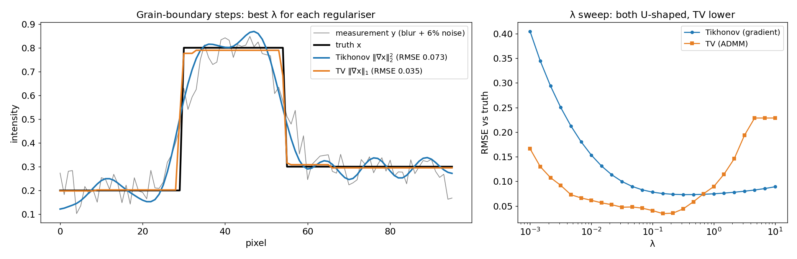
Notebook section 6 (SEED=42): a 1-D piecewise-constant signal (0.2 → 0.8 → 0.3; two grain boundaries), blurred with a Gaussian PSF (\(\sigma\) = 4 px) plus 6 % noise. Left: best reconstruction of each regulariser after a \(\lambda\) sweep. Gradient-Tikhonov (blue, RMSE 0.073) smears both boundaries into ramps and rings in the flat regions; TV solved with ADMM (orange, RMSE 0.035) keeps the steps nearly vertical. Right: both RMSE curves are U-shaped in \(\lambda\); TV’s minimum is ≈ 2× lower. Note the flat TV plateau at large \(\lambda\): the reconstruction collapses to a constant.
Solving TV: proximal splitting and ADMM
- Problem: \(\min_\mathbf{x} \tfrac12\|H\mathbf{x}-\mathbf{y}\|^2 + \lambda\|D\mathbf{x}\|_1\) — the second term has a kink, so plain gradient descent stalls.
- ADMM idea Boyd, Stephen et al., (2011), doi:10.1561/2200000016: introduce \(\mathbf{z} = D\mathbf{x}\) and alternate three simple steps:
- data step: \(\mathbf{x} \leftarrow (H^\top H + \rho D^\top D)^{-1}(H^\top\mathbf{y} + \rho D^\top(\mathbf{z}-\mathbf{u}))\)
- prior step: \(\mathbf{z} \leftarrow \operatorname{soft}_{\lambda/\rho}(D\mathbf{x} + \mathbf{u})\) — soft-thresholding: small gradients → exactly 0 (flat regions)
- dual step: \(\mathbf{u} \leftarrow \mathbf{u} + D\mathbf{x} - \mathbf{z}\)
- The general pattern: data consistency step ↔︎ denoising step (the proximal operator of the prior). Every modern reconstruction algorithm — SART + TV, fusion, plug-and-play — has this structure.
- Notebook:
tv_admm()is 10 lines of NumPy; 500 iterations on 96 pixels take milliseconds.
Plug-and-play priors: a learned denoiser as the prior step
- Observation: in ADMM the prior only enters through a denoising step. So replace it by any good denoiser \(D_\sigma\) — BM3D, or a CNN (DnCNN, U-Net) trained on clean EM images. Venkatakrishnan, Singanallur V. et al., (2013), doi:10.1109/GlobalSIP.2013.6737048; Kamilov, Ulugbek S. et al., (2023), doi:10.1109/MSP.2022.3199595
- PnP-ADMM: \(\mathbf{z}^k \leftarrow \operatorname{prox}_{\alpha g}(\mathbf{x}^{k-1} - \mathbf{s}^{k-1})\) (physics / data) \(\mathbf{x}^k \leftarrow D_\sigma(\mathbf{z}^k + \mathbf{s}^{k-1})\) (learned prior) \(\mathbf{s}^k \leftarrow \mathbf{s}^{k-1} + \mathbf{z}^k - \mathbf{x}^k\)
- Why not train an end-to-end inverse network? It must learn physics and prior, gives no data-consistency guarantee and must be retrained for every new geometry. PnP keeps the physics explicit and reuses one denoiser.
- Separation of concerns:
- forward model \(H\) = known physics (projector, PSF, multislice)
- prior = learned statistics of plausible images
- Caveats: convergence needs well-behaved denoisers; a denoiser trained on the wrong material hallucinates its training distribution.
- Next week: diffusion models push this idea further — a generative prior sampled while enforcing data consistency.
Choosing \(\lambda\): the bias–variance trade-off
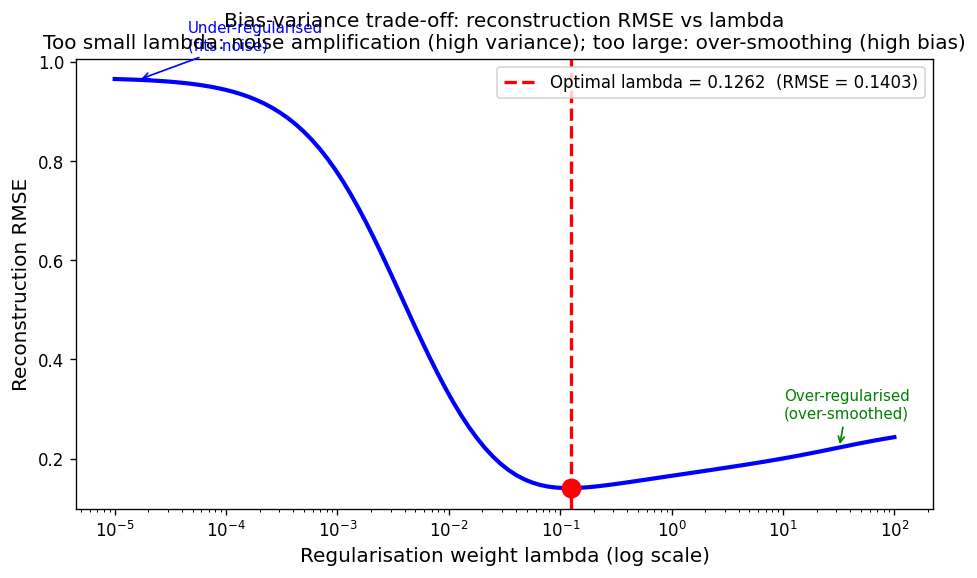
Reconstruction RMSE as a function of \(\lambda\) for the 1-D deblurring notebook (SEED=42, N=64, \(\sigma_\text{PSF}=3\), noise = 10 %). At \(\lambda=10^{-5}\) RMSE ≈ 0.966 (under-regularised — fits noise); at \(\lambda=100\) RMSE ≈ 0.243 (over-regularised); minimum at \(\lambda^* \approx 0.126\) with RMSE ≈ 0.140. The U-shape is the bias–variance trade-off made explicit.
Choosing \(\lambda\) without ground truth: the L-curve
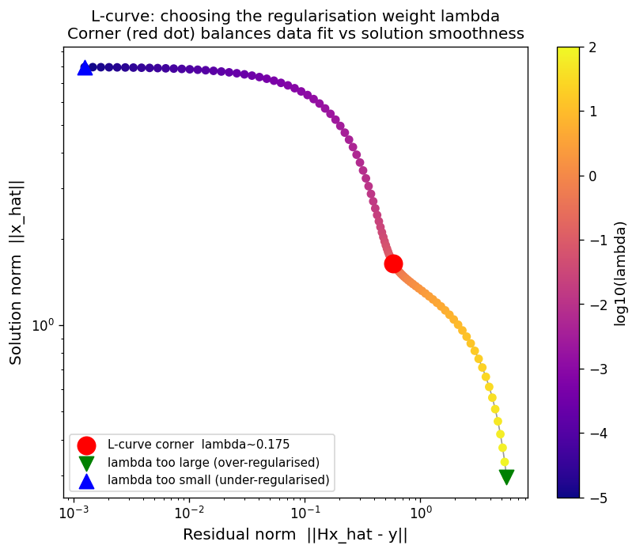
L-curve for the 1-D deblurring problem: residual norm \(\|H\hat{\mathbf{x}} - \mathbf{y}\|\) vs solution norm \(\|\hat{\mathbf{x}}\|\), log–log, each point one \(\lambda\). The corner (red dot, \(\lambda \approx 0.175\), maximum curvature) is a data-only estimate of the optimal balance. It lies slightly above the RMSE-optimal \(\lambda \approx 0.126\) and gives RMSE ≈ 0.142 vs the optimum 0.140: a good heuristic, not an exact optimum.
Practical \(\lambda\) selection: the discrepancy principle and friends
- Discrepancy principle (Morozov): choose \(\lambda\) so the residual matches the expected noise: \(\|H\hat{\mathbf{x}}_\lambda - \mathbf{y}\| \approx \|\boldsymbol\epsilon\|\). Needs a noise estimate — feasible in EM (Poisson: from the counts; Gaussian: from blank frames).
- Cross-validation: hold out a subset of measurements (pixels, tilts); choose \(\lambda\) minimising the held-out residual. Honest-validation logic from Week 4 applied to reconstruction.
- L-curve: maximal curvature in the log–log plot — no noise estimate needed, can mislead on flat curves.
- Notebook, tomography exercise: the discrepancy principle picks TV weight 0.04 (residual / noise norm = 0.96) — exactly the RMSE-optimal weight, without using the ground truth.
- Always report \(\lambda\) — it is a hyperparameter of your measurement, like the accelerating voltage.
\(\lambda\) selection in EM: what practitioners do
- Tomography: SART + TV; sweep the TV weight on a log grid; inspect: ringing / noise → increase, lost small features → decrease; check the residual against the noise floor.
- EELS/EDS deconvolution: Wiener filter = Tikhonov in Fourier space with a frequency-dependent \(\lambda = 1/\mathrm{SNR}(k)\).
- Sensor fusion: tune the TV weight on a reference region with known composition (vacuum must stay zero); err on the side of under-regularising — noise is familiar, over-smoothing creates unphysical features. Manassa, Jason et al., (2024), doi:10.69761/MXVR4353
- There is no universal correct \(\lambda\) — it depends on noise level, specimen and question.
Why tomography? Projections are misleading
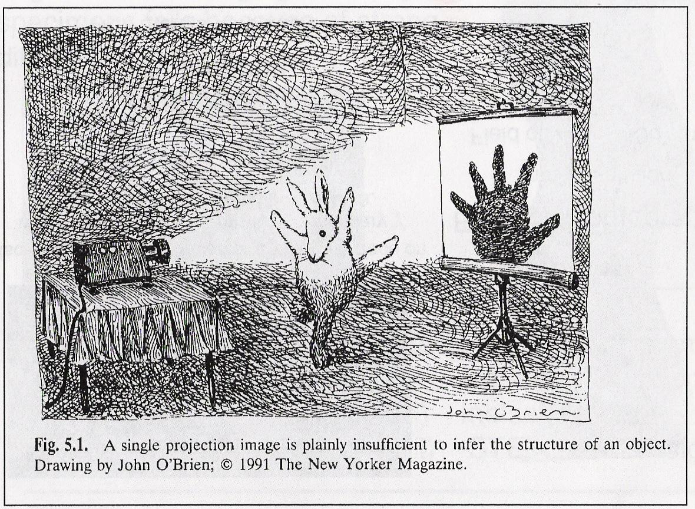
- A TEM/STEM image is a 2-D projection of a 3-D object: overlapping particles, buried interfaces, pores and shape are ambiguous.
- Structure determines function: quantum-dot size → emission colour; particle shape → catalytic facets.
- Electron tomography: record projections over many tilt angles, then solve the inverse problem for the 3-D density. Midgley, Paul A. et al., (2003), doi:10.1016/S0304-3991(03)00105-0; Frank, Joachim, (2006), doi:10.1007/978-0-387-69008-7
- Related 3-D techniques are all inverse problems: crystallography, cryo-EM single-particle analysis, atom-probe tomography, ptychographic tomography.
The projection requirement and the forward model
- Projection requirement: the recorded intensity must be a monotonic function of a projected property (mass-thickness, potential, \(Z\)). Midgley, Paul A. et al., (2003), doi:10.1016/S0304-3991(03)00105-0
- HAADF-STEM: incoherent, \(\approx Z^{1.7}\)-weighted, no contrast reversals → the standard for materials tomography.
- BF-TEM: diffraction and phase contrast violate monotonicity for crystals → artefacts.
- Forward model: each projection \(p_\theta(s) = \int_\text{ray} f\, dl\) is a line integral at tilt \(\theta\).
- Tilt series: from \(-\theta_\text{max}\) to \(+\theta_\text{max}\) in 1°–3° steps; typical ±70°, 50–140 images.
- Dose budget: total dose = dose per image × number of tilts. Beam-sensitive samples → fewer tilts / lower dose per tilt → more regularisation needed.
The Radon transform and the sinogram
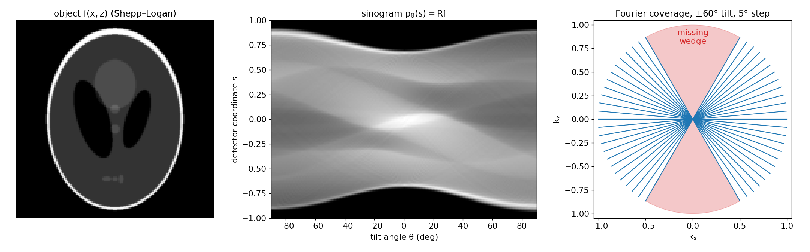
Left: a 2-D test object \(f(x,z)\) (Shepp–Logan phantom, 128×128). Centre: its sinogram — the Radon transform \(p_\theta(s)\) for 180 tilts; every point of the object traces a sinusoid \(s = x\cos\theta + z\sin\theta\). Right: Fourier-space coverage of a ±60°, 5°-step tilt series (blue spokes) and the unmeasured missing wedge (red). Generated by img/make_figures.py.
- \(\;p_\theta(s) = (\mathcal{R}f)(\theta, s) = \iint f(x,z)\,\delta(x\cos\theta + z\sin\theta - s)\,dx\,dz\) — linear in \(f\), so in discrete form \(\mathbf{p} = R\,\mathbf{f}\) with a (huge, sparse) matrix \(R\). Radon, Johann, (1917)
Back-projection: why we need the filter
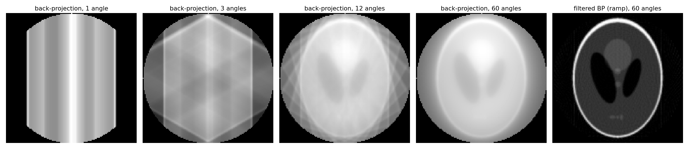
Unfiltered back-projection of the phantom with 1, 3, 12 and 60 projection angles (smear each projection back along its rays and sum), and filtered back-projection (ramp filter) with 60 angles. Few angles give star artefacts; many angles still give a blurred image (the \(1/|k|\) over-weighting of low frequencies). The ramp filter removes the blur. Generated by img/make_figures.py.
- Back-projection \(R^\top\mathbf{p}\) = the adjoint of the projector: smear each projection back along its rays and sum.
- Plain back-projection is not the inverse: Fourier spokes are dense near the origin and sparse far out → low frequencies are over-counted by \(1/|k|\) → blur.
- Filtered back-projection (FBP): multiply each projection’s 1-D spectrum by \(|k|\) (ramp filter), then back-project. Exact for complete, noise-free data. Kak, Avinash C. et al., (1988)
The Fourier-slice theorem
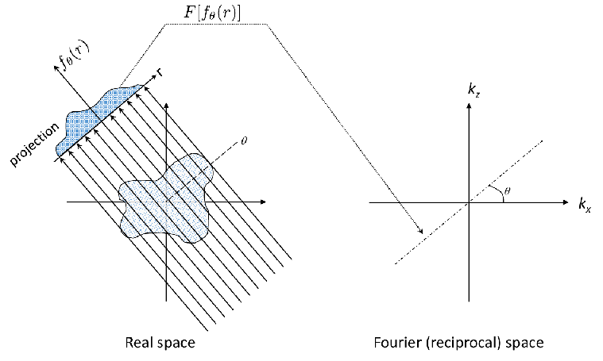
- Theorem: the 1-D Fourier transform of the projection \(p_\theta\) equals the slice of the 2-D Fourier transform of \(f\) through the origin at angle \(\theta\): \[\mathcal{F}_{1D}[p_\theta](k) = \mathcal{F}_{2D}[f](k\cos\theta,\,k\sin\theta)\]
- In 3-D: a 2-D projection ↔︎ a central plane of the 3-D Fourier transform.
- Consequence 1: each tilt fills one spoke; \(K\) tilts fill \(K\) spokes; the gaps are the null space.
- Consequence 2: complete angular coverage ⇒ all of Fourier space ⇒ unique inversion (Radon) — FBP is exactly “fill the spokes, correct the density with \(|k|\), invert”.
The Fourier-slice theorem, checked numerically
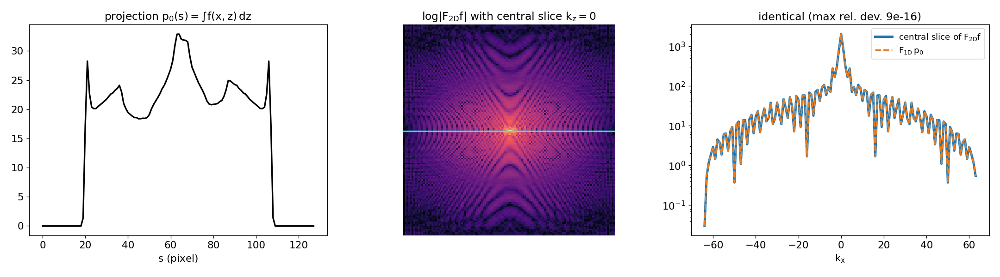
Notebook section 7: the projection of the phantom along \(z\) (left), the 2-D Fourier transform with the central slice \(k_z = 0\) marked (centre), and the 1-D Fourier transform of the projection overlaid on that central slice (right). They agree to machine precision (max. relative deviation ≈ 1e-15).
The missing wedge
- Tilt limit: holder and grid shadow the beam beyond ±60°–80° → an unmeasured wedge of Fourier space (for single-axis tilt).
- Consequence: frequencies in the wedge are in the null space of \(R\) — no algorithm recovers them from the data. Reconstructions are elongated along the beam direction; resolution becomes anisotropic.
- Diagnostic: the elongation is always along the beam, identical for all particles, and shrinks with a larger tilt range. Frank, Joachim, (2006), doi:10.1007/978-0-387-69008-7
- Mitigation: needle specimens with ±90° tilt; dual-axis tilt (missing pyramid); priors — non-negativity, TV, compressed sensing — that fill the wedge with plausible values. Leary, Rowan et al., (2013), doi:10.1016/j.ultramic.2013.03.019; Saghi, Zineb et al., (2016), doi:10.1186/s40679-016-0020-3
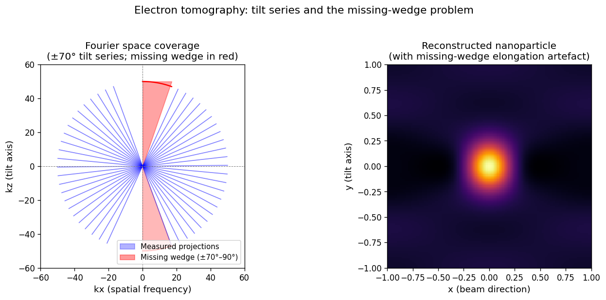
Tomographic reconstruction algorithms
- FBP: analytical inverse Radon (ramp filter + back-projection). Fast (\(O(N^2\log N)\) per slice), no hyperparameters except the filter — but assumes complete, noise-free data: noise is amplified by the ramp, the missing wedge gives streaks and elongation.
- SART (Simultaneous Algebraic Reconstruction Technique): iterative least squares on \(\mathbf{p} = R\mathbf{f}\) — forward-project the current estimate, back-project the residual, update; easy to add non-negativity. Andersen, Anders H. et al., (1984), doi:10.1177/016173468400600107
- SART + TV: alternate a SART sweep (data step) with a TV denoising step (prior step) — the ADMM pattern again. Saghi, Zineb et al., (2016), doi:10.1186/s40679-016-0020-3
- Compressed-sensing tomography: directly minimise \(\|R\mathbf{f} - \mathbf{p}\|^2 + \lambda\,\text{TV}(\mathbf{f})\) or a sparsity norm; reconstructs from far fewer tilts. Leary, Rowan et al., (2013), doi:10.1016/j.ultramic.2013.03.019
- Learned priors (PnP, unrolled networks, diffusion): Week 13.
FBP vs iterative vs regularised: the notebook result
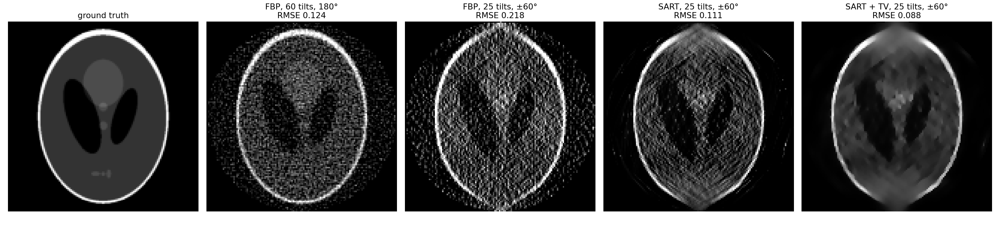
Notebook section 7 (SEED=42, 128×128 phantom, 5 % Gaussian noise on the sinogram). RMSE inside the reconstruction disk: FBP with 60 tilts over 180° — 0.124 (noise amplified by the ramp filter); FBP with 25 tilts over ±60° — 0.218 (noise + streaks + vertical missing-wedge elongation); SART on the same limited data — 0.111; SART + TV (weight 0.04) — 0.088. The regularised limited-angle reconstruction beats unregularised FBP even on complete data, but the top and bottom of the ellipse remain blurred: the wedge is filled by the prior, not measured.
Tomography in 3-D: a spectroscopic example
- Challenge: 3-D spectroscopic maps need a spectrum image at every tilt — 4-D/5-D data \((x, y, \theta, E)\) with extreme dose.
- Landmark: Nicoletti et al. (2013) reconstructed the 3-D distribution of localised surface plasmons of a silver nanocube from an EELS tilt series. Nicoletti, Osman et al., (2013), doi:10.1038/nature12469
- Result: corner, edge and face modes — which overlap in every projection — separated in 3-D.
- What regularisation contributed: strongly regularised / constrained reconstruction made the noisy per-energy data usable.
- Newer route: fused multi-modal tomography — combine the high-SNR HAADF tilt series with sparse EDS tilts in one objective, 3-D chemistry at ≈ 1 nm resolution. Schwartz, Jonathan et al., (2024), doi:10.1038/s41467-024-47558-0 → the topic of section 8.
Electron tomography: artefacts to be aware of
- Missing-wedge elongation: along the beam direction; severity grows with the missing angle.
- Streaks (FBP): radiating from high-contrast features at the extreme tilt angles and between sparse angles.
- Over-regularisation: TV staircases and cartoon look; Tikhonov blur. Monitor the residual — much larger than the noise level ⇒ over-regularised.
- Model violations: diffraction contrast in BF, channelling in HAADF, beam damage during the series, tilt-axis misalignment — no regulariser fixes a wrong forward model.
- Honest reporting: tilt range, tilt step, algorithm, number of iterations, \(\lambda\), total dose.
Sensor fusion: why fuse HAADF + EDS/EELS?
- HAADF alone: high SNR (elastic scattering, thousands of counts/px), atomic resolution, but only \(Z\)-contrast (\(\approx Z^{\gamma}\), \(\gamma \approx 1.6\)–\(2\)) — cannot tell which element is where.
- EDS/EELS alone: chemically specific, but inelastic cross-sections are small → few counts/px at a safe dose → noisy maps, resolution limited by SNR, not by the probe.
- Brute force: 10× dose → \(\sqrt{10} \approx 3.2\times\) SNR — and a destroyed specimen.
- Fusion idea: the HAADF image is recorded simultaneously at no extra dose. Use it as a physical constraint: the elemental maps must jointly explain the HAADF contrast. Schwartz, Jonathan et al., (2022), doi:10.1038/s41524-021-00692-5
- This is a regularised inverse problem with two forward operators acting on the same unknowns — the template from section 1, one more data term.
The fused multi-modal objective
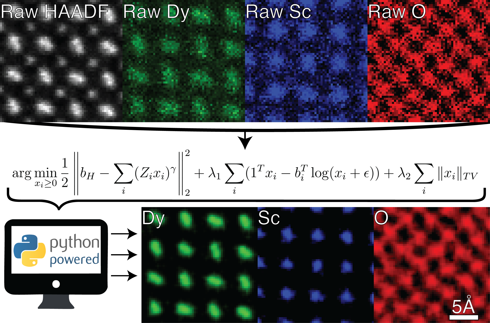
Fused multi-modal electron microscopy: raw HAADF and noisy EDS maps of DyScO\(_3\) (top) are combined in one objective (centre) and yield denoised elemental maps (bottom). Figure from Schwartz, Jonathan et al. (2022), doi:10.1038/s41524-021-00692-5 (CC BY 4.0), via the Elemental Microscopy tutorial Manassa, Jason et al., (2024), doi:10.69761/MXVR4353.
\[\hat{\mathbf{x}} = \arg\min_{\mathbf{x}_i \geq 0}\; \underbrace{\tfrac12\Big\|\mathbf{b}_H - \sum_i (Z_i\mathbf{x}_i)^{\gamma}\Big\|_2^2}_{\Psi_1:\ \text{HAADF consistency}} + \lambda_1 \underbrace{\sum_i \big(\mathbf{1}^\top\mathbf{x}_i - \mathbf{b}_i^\top\log(\mathbf{x}_i + \varepsilon)\big)}_{\Psi_2:\ \text{Poisson EDS fidelity}} + \lambda_2 \underbrace{\sum_i \|\mathbf{x}_i\|_\text{TV}}_{\text{prior}}\]
The fusion objective, term by term
| Term | Physics | Noise model | Role |
|---|---|---|---|
| \(\Psi_1 = \frac12\|\mathbf{b}_H - \sum_i (Z_i\mathbf{x}_i)^\gamma\|^2\) | incoherent HAADF, \(\gamma \approx 1.6\) | Gaussian (high counts) | links all elements to the high-SNR image |
| \(\Psi_2 = \sum_i \mathbf{1}^\top\mathbf{x}_i - \mathbf{b}_i^\top\log(\mathbf{x}_i+\varepsilon)\) | EDS/EELS counts ∝ concentration | Poisson (low counts) | keeps chemistry faithful to the spectroscopy |
| \(\lambda_2\sum_i\|\mathbf{x}_i\|_\text{TV}\) | maps are piecewise smooth | — | noise suppression, edge preservation |
| \(\mathbf{x}_i \geq 0\) | concentrations are non-negative | — | removes unphysical solutions |
- Why it works: \(\Psi_1\) alone is non-unique (many element mixtures give the same \(Z\)-contrast); \(\Psi_2\) alone is noisy. Together they are well-posed: HAADF fixes where, EDS fixes what.
- Reported gains: 300–500 % SNR improvement, > 10× dose reduction, stoichiometry within ≈ 15 %. Schwartz, Jonathan et al., (2022), doi:10.1038/s41524-021-00692-5
The fusion algorithm: gradient step + positivity + TV
- One iteration (from the SS25 tutorial code,
fusion_utils.py) — the ADMM-style pattern again:- data step: \(\mathbf{x} \leftarrow \mathbf{x} - \eta\big[\lambda_H\,\gamma\,\mathbf{x}^{\gamma-1}\odot A^\top(A\mathbf{x}^\gamma - \mathbf{b}_H) + \lambda_1(\mathbf{1} - \mathbf{b}/(\mathbf{x}+\text{bkg}))\big]\)
- constraint: \(\mathbf{x} \leftarrow \max(\mathbf{x}, 0)\)
- prior step: a few iterations of fast gradient-projection TV denoising per element (weight \(\lambda_\text{TV}\))
- Typical settings: \(\gamma \approx 1.6\), \(\lambda_1 \in [0.05, 0.3]\), \(\lambda_\text{TV} < 0.2\), converges in 10–30 iterations. Manassa, Jason et al., (2024), doi:10.69761/MXVR4353
- Convergence check: all three cost terms should decay and level off — oscillations mean a too-large step or \(\lambda\).
- Validation: compare with the raw maps on thin, well-known regions; vacuum must stay empty.
Fusion result: DyScO\(_3\) at atomic resolution
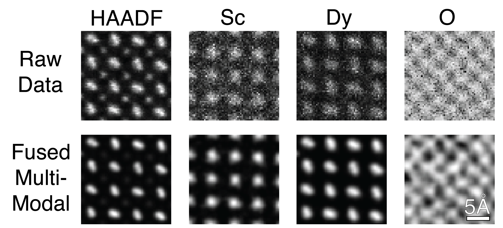
Raw (top) and fused multi-modal (bottom) HAADF, Sc, Dy and O maps of DyScO\(_3\). The noisy EDS maps become clean atomic-column maps; even the light-element O map, invisible in HAADF, gains structure because it is coupled to the other elements through the HAADF term. Figure from Schwartz, Jonathan et al. (2022), doi:10.1038/s41524-021-00692-5 (CC BY 4.0) / Manassa, Jason et al. (2024), doi:10.69761/MXVR4353.
The TV weight decides: noisy – right – over-smoothed
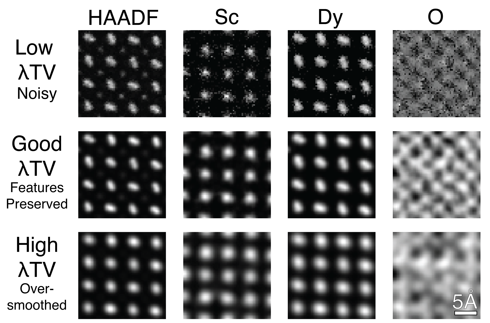
Effect of the TV weight on the fused maps of DyScO\(_3\): low \(\lambda_\text{TV}\) leaves noise, a good \(\lambda_\text{TV}\) preserves the features, a high \(\lambda_\text{TV}\) over-smooths (column shapes become round blobs, O detail disappears). Figure from Manassa, Jason et al. (2024), doi:10.69761/MXVR4353.
Fusion on a synthetic core-shell particle
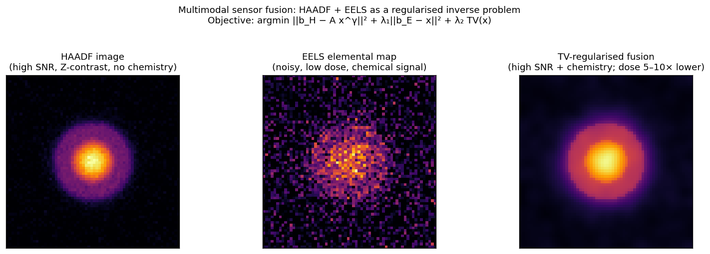
Synthetic core-shell nanoparticle. Left: HAADF image (high SNR, \(Z\)-contrast, no chemical specificity). Centre: low-dose elemental map (25 % relative noise). Right: TV-regularised fusion of both signals. Core and shell are recovered with sharp boundaries. Honest caveat: TV may slightly over-estimate core–shell contrast at high \(\lambda_2\).
Fusion as the general framework
- Every EM reconstruction fits one template: \(\;\hat{\mathbf{x}} = \arg\min_\mathbf{x} \sum_k \lambda_k\, \mathcal{D}_k(\mathbf{y}_k, H_k\mathbf{x}) + \lambda_\text{reg} R(\mathbf{x})\)
- \(\mathcal{D}_k\) = negative log-likelihood of modality \(k\) (Gaussian, Poisson), \(H_k\) = its forward operator.
- Examples: deblurring (one term) · tomography (\(H\) = Radon) · HAADF + EDS fusion (two terms) · fused multi-modal tomography (HAADF tilt series + sparse EDS tilts) Schwartz, Jonathan et al., (2024), doi:10.1038/s41467-024-47558-0 · ptychography (\(H\) = multislice, Week 13).
- Modular: a new detector = a new data term with its own physics and noise model; the prior stays.
- The limit: strongly nonlinear or non-differentiable \(H_k\), and hand-crafted priors that are too simple → learned and generative priors (Week 13).
What good reconstruction looks like — and its honest limits
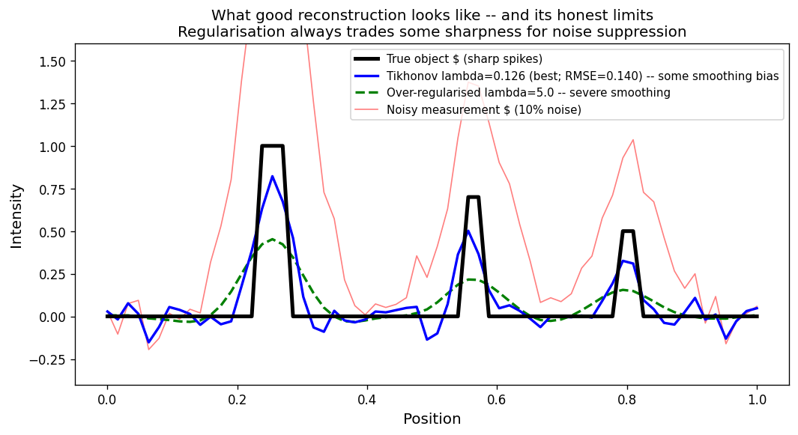
Reconstruction quality for the 1-D deblurring notebook (SEED=42, noise = 10 %). Black: true object. Red: noisy measurement. Blue: Tikhonov at near-optimal \(\lambda \approx 0.126\) (RMSE ≈ 0.140) — peaks correctly located, heights slightly underestimated. Dashed green: over-regularised (\(\lambda = 5\), RMSE ≈ 0.189) — peaks smeared. The naive inverse (RMSE ≈ 0.968, not shown) is useless.
Reconstruction limits: what we cannot recover
- Null space of \(H\): information in the null space is irreversibly lost — no algorithm recovers it from \(\mathbf{y}\).
- Tomography: the missing-wedge frequencies.
- Deblurring: frequencies where the OTF is below the noise floor.
- Fusion: element mixtures that give identical HAADF contrast and are hidden in EDS noise.
- Noise floor: accuracy is bounded by \(\|\boldsymbol\epsilon\| / \sigma_\text{min}(H)\) — more dose or better detectors raise it, not better algorithms.
- Regularisation bias: the prior pulls the solution towards its mode; a wrong prior gives a systematic, convincing error.
- Diagnostic: compare the reconstruction’s power spectrum with the noise floor; everything beyond the crossing was filled by the prior. Report it — and, where possible, report uncertainty (Week 11).
Self-study notebook: deblurring, TV and tomography
notebooks/week12_inverse_deblurring.ipynb

- Forward model, SVD, condition number
- Naive inverse vs Tikhonov, \(\lambda\) sweep, L-curve
- TV vs Tikhonov with a 10-line ADMM
- Tomography lab:
radon/iradon/iradon_sart, Fourier-slice check, FBP vs SART vs SART + TV - Exercises: noise / PSF sweep; tilt range, #tilts, TV weight, discrepancy principle
CPU only, < 1 min, numpy / scipy / scikit-image.
Key results (SEED=42)
| Quantity | Value |
|---|---|
| \(\kappa(H)\) | 230 |
| naive / best Tikhonov RMSE | 0.968 / 0.140 |
| step: Tikhonov / TV RMSE | 0.073 / 0.035 |
| FBP 180°, 60 tilts | 0.124 |
| FBP ±60°, 25 tilts | 0.218 |
| SART / SART + TV (±60°) | 0.111 / 0.088 |
| discrepancy-principle TV weight | 0.04 (= RMSE optimum) |
Summary
- Forward model \(\mathbf{y} = H\mathbf{x} + \boldsymbol\epsilon\): \(H\) from physics, the data term from the noise model.
- Ill-posed = non-unique and/or unstable; small singular values amplify noise by up to \(\kappa\).
- Regularisation = prior: Tikhonov (smooth), TV (piecewise constant), non-negativity, learned denoisers (PnP); \(\lambda\) via L-curve, discrepancy principle, cross-validation.
- Tomography: Radon transform → sinogram; Fourier-slice theorem → spokes in Fourier space; FBP = ramp-filtered back-projection; the missing wedge is a null space; SART + TV beats FBP on limited, noisy data but cannot measure the wedge.
- Sensor fusion: HAADF fixes where, EDS/EELS fixes what; one objective with a Gaussian HAADF term, a Poisson EDS term, TV and non-negativity → ≈ 10× dose reduction.
- Universal pattern: alternate a data-consistency step and a prior step.
Must-know takeaways
- \(\mathbf{y} = H\mathbf{x} + \boldsymbol\epsilon\); Hadamard: existence, uniqueness, stability; \(\kappa = \sigma_\text{max}/\sigma_\text{min}\) bounds noise amplification.
- Tikhonov: \(\hat{\mathbf{x}} = (H^\top H + \lambda L^\top L)^{-1}H^\top\mathbf{y}\); SVD filter factors \(\sigma_i^2/(\sigma_i^2 + \lambda)\).
- Regulariser = −log prior (MAP): L2 ↔︎ Gaussian (smooth), TV ↔︎ piecewise constant (edges), L1 ↔︎ sparse.
- \(\lambda\): U-shaped error; L-curve corner and discrepancy principle \(\|H\hat{\mathbf{x}}-\mathbf{y}\| \approx \|\boldsymbol\epsilon\|\) need no ground truth.
- Radon transform = line integrals; sinogram; Fourier-slice theorem: \(\mathcal{F}_{1D}p_\theta\) = central slice of \(\mathcal{F}_{2D}f\) at angle \(\theta\).
- FBP = ramp filter \(|k|\) + back-projection; exact only for complete, noise-free data. SART/TV: iterative, handle noise and limited angles.
- Missing wedge = null space → elongation along the beam; priors fill it, they do not measure it.
- Fusion objective: HAADF \(Z^\gamma\) consistency + Poisson EDS fidelity + TV + \(\mathbf{x} \geq 0\).
Next week: Inverse problems II
- Today: the classical toolbox — forward model, ill-posedness, Tikhonov/TV/PnP, \(\lambda\) selection, tomography, sensor fusion.
- What it cannot do well: strongly nonlinear forward models (multiple scattering), extremely sparse data, and priors richer than “smooth” or “piecewise constant”.
- Week 13 — Inverse problems II: ptychography, generative priors & synthesis. Strong-phase approximation and multislice, ePIE vs autodiff gradient-descent ptychography, GAN → diffusion priors and diffusion posterior sampling, physics-informed networks — and the synthesis of the whole course (E1–E6 explainability ladder, exam preparation).
- Preparation: finish notebook sections 6–7; revisit Week 6 (autograd) — next week we differentiate through the physics.
Continue
References

©Philipp Pelz - FAU Erlangen-Nürnberg - Data Science for Electron Microscopy